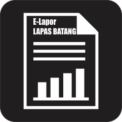

LAPORAN SHIFT PAGI
ASTEKPAM
Inventaris
Makan WBP Pagi
Apel Tamping & Santri
Senam Pagi WBP
Kunjungan
Lagu Kebangsaan
Penggeledahan
Shalat Duhur
Makan WBP Siang
Pintu Samping
Trolling Brandgang
Laporan General
Kontrol Blok Hunian